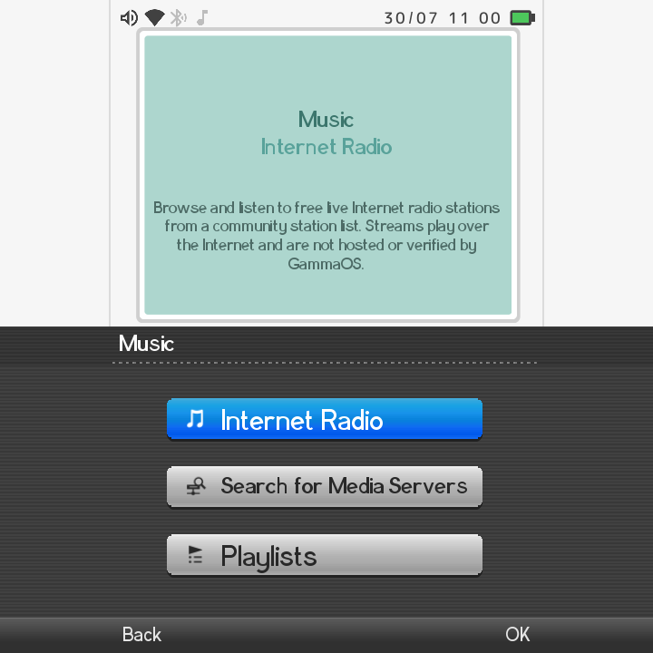
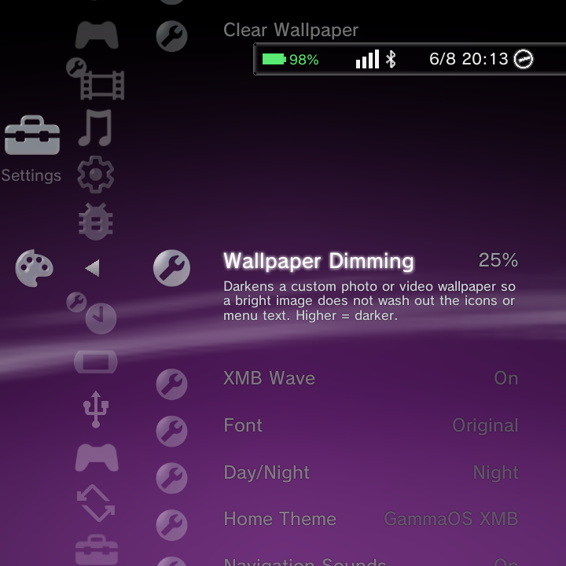

GammaOS Nano is a media player as well as a game launcher. Your handheld can play music, show off your photos, and stream video, all from the home menu.
The home menu has three media categories: Music, Photo, and Video. Each one scans your storage for supported files and organizes them into easy-to-browse libraries. Every category also has an online browser (Internet Radio, IPTV, and DLNA/network share search) so you are not limited to files on your device.

Music
Open the Music category to browse your library three ways:
| View | What it shows |
|---|---|
| Albums | Your tracks grouped by album |
| Playlists | Manual groups you create across folders |
| Tracks | Every song in one flat list |
Supported audio formats: mp3, flac, m4a, aac, ogg, opus, wav, wma.
Now Playing
Start a track to open the Now Playing screen. It shows the album art plus:
- Play and pause
- Previous and next track
- Volume
- Visualizers (choose Canyon or Globe)
On tall portrait panels the Now Playing view switches to a vertical, phone-style layout: a large centred album jacket, the title and artist below it, a full-width seek bar, and the controls under that.
You can tap or drag the seek bar to jump to a point in a local track. It previews the position while you drag and commits when you let go.
If you have set a custom wallpaper, a dark scrim sits behind the player so the art, text and controls stay readable over busy images.
Deleting the track you are listening to now keeps the music player open and moves to the next track, instead of dropping you back to the home menu.
Internet Radio
Music includes an Internet Radio browser, turned on by default. Browse and play live radio stations without any local files.
Want your own station list? You can set a custom playlist URL in Settings > Music Settings (Internet Radio on/off and Radio Playlist URL). See the Settings reference for details.
Photo
Open the Photo category for a thumbnail grid that opens into a full-screen viewer.
Supported image formats: jpg, png, webp, bmp, gif, heic, heif.
In the viewer you can:
- Pan with touch and pinch to zoom
- Start a slideshow with play/pause and previous/next
- View info about the current photo
- Delete a photo
Group your photos by Month, Year, Album, or All so a big library stays tidy. You can also build Playlists, which are manual groups that pull photos from across different folders.
Bulk photo delete
Deleting a photo group (by folder, month or year) or several photos you have checked now permanently removes the files, not just the entries. Bulk photo copy was removed because the clipboard only holds one path, but copying a single photo still works.
Video
Open the Video category to browse by Folders, Playlists, or a flat Videos list.
Supported video formats: mp4, m4v, mkv, webm, mov, 3gp, avi, ts, mpg. MPEG-TS and AVI are handled in-process, so those tricky formats just work.
The full-screen player gives you:
- Play, pause, and seek
- Volume
- Multi-audio-track selection (tracks are labeled by language)
- Subtitle and caption selection
Change a video's icon
In the video player, open the Options menu and choose Change Icon to grab the current frame and use it as that video's thumbnail in the column. Pause on the frame you want first.
IPTV
Video includes an IPTV live-channel browser, turned on by default. Browse live channels straight from the menu.
To use your own channel list, set a custom playlist URL in Settings > Video Settings (IPTV Channels on/off and IPTV Playlist URL). See the Settings reference.
Play media from network servers
Each media category has a Search for Media Servers option that browses DLNA servers and network shares on your home network. This lets you play music, photos, and video that live on another computer or NAS, without copying anything to your handheld first.
To mount a share so its files also feed the scanned Music, Photo, and Video libraries, set it up in Network Shares. Mounted shares behave just like local storage.
Sort and folder view
Press Y in the Photo, Video or Music library to cycle its sort modes. The final mode in the cycle groups the library by its parent folder, so files are organised the same way they sit on disk. Your choice is remembered separately for each library.
Media as wallpaper
You can set a photo or a video as your home wallpaper. When you are choosing a video wallpaper, the focused clip plays a live preview in its grid cell before you pick it, so you can see how it looks in motion.
A Wallpaper Dimming setting (0 to 70%, default 25%) lays a scrim over photo and video wallpapers so bright images do not wash out the icons and text. Find it in Theme Settings. See What's New for more on the media changes.

Per-item Options
Highlight any track, photo, or video and open the Options menu for actions specific to that item (for example, deleting or adding to a playlist). For the full breakdown of what each Options menu offers, see Context menus.